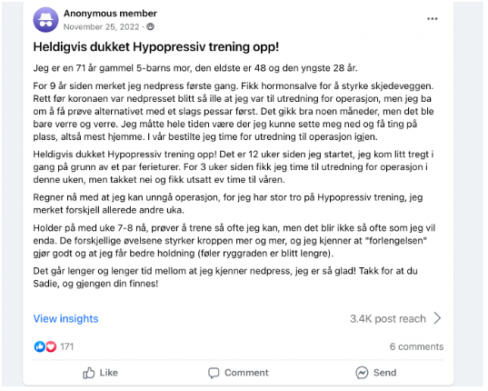
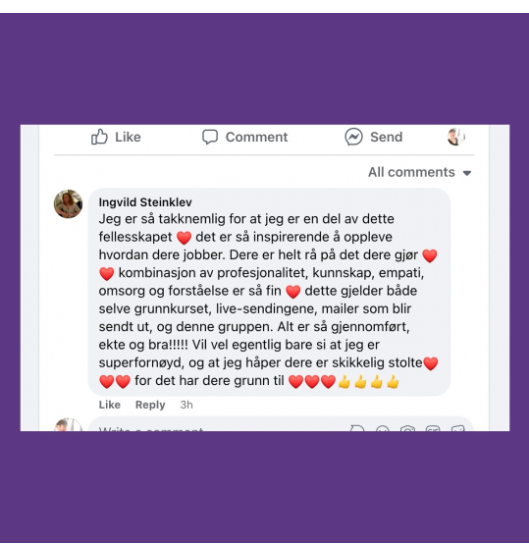
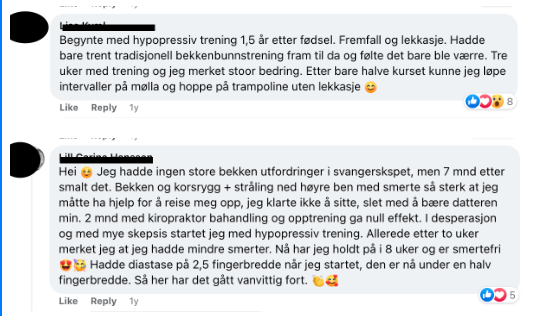

Hypopressiv Trening Norge
Tror du det er for godt til å være sant? La meg utfordre den tanken ❤️
Du har sett før- og etter bildene (vi har tusenvis) av både mager og underliv med plager før og etter Hypopressiv Trening Norge metoden 😱
Du har sett mange av de tusenvis av tilbakemeldingene vi får fra fornøyde kvinner som har fått livet tilbake etter at de startet med oss.
(👉🏼Vet du ikke hva jeg prater om? Har du ennå ikke sett sendingen? Jeg har fått så mange meldinger fra de som var med om hvor livsendrende kunnskapen jeg deler underveis er, og for mange så er det første gangen de har kjent på håp om å faktisk bli bedre og virkelig få en kropp som fungerer - det fortjener alle!
| Få med deg reprisen på sendingen HER! |
Likevel har du dine tvil, eller kanskje tenker du at dette ikke gjelder deg? Fordi du har litt andre plager, ikke så mye plager, "mindre" plager, fordi du er yngre, eldre, har hatt plagene lengere, du tror ikke de kommer fra fødsel (eller vet at de ikke gjør det), og tenker at de tusenvis som har fått det til, de er spesielle, men ikke deg?
|
🤫 Jeg skal fortelle deg en hemmelighet: det er ingenting magisk ved de 12.000+ kvinnene vi har hjulpet. De er ikke godt trent fra før, eksperter på data, supergode på å planlegge trening, eller spesielt lett-trent, heller ikke smartere enn alle andre. Det er helt vanlige damer mellom 18-85 år som har bestemt seg for å ta kroppen og helsen i egne hender og gjøre noe med det som plager dem. De har bare bestemt seg for at de er ferdige med å la seg begrense av plagene de har. |
🎉 Nettkurset i Hypopressiv Trening Norge metoden er nøkkelen din til å låse opp denne fremtiden. La meg dele noen historier med deg. Scroll ned for tilbakemeldinger vi har fått fra kvinner, akkurat som deg, som har endret livet sitt med Hypopressiv trening Norge metoden.
| 👉🏼👉🏼 Meld deg på HER innen kl 24:00 søndag for å få kurset med bonuser til kun 6472,- eller 962,- x 8. Du får informasjon om privattimen din på mandag! 👈🏼👈🏼 |
|
Mette, mamma og bestemor, 65 år "Nå kan jeg endelig glede meg til hagesesongen igjen uten å grue med til nedpress og vondt i ryggen! Jeg begynte å få nedpress ifm overgansgalder, før det hadde jeg fått det da jeg fikk menstruasjonen, men nå var det plutselig konstant! Jeg var så redd for å måtte opereres, fordi mamma ble operert på min alder og ble aldri bra igjen - jeg hadde drevet med knipeøvelser, men det hadde ikke hjulpet i det hele tatt... Men etter 3 måneder med nettkurset i Hypopressiv trening var jeg helt kvitt nedpressfølelsen! Det var helt fantastisk! Som et bonus ble ryggsmertene også borte, og i år skal jeg kose meg i hagen igjen og lære barnebarna å dyrke både blomster og bær!" |

|
Aslaug, mamma til 2 «Før jeg begynte med hypopressiv trening sleit jeg mye med nedpress, jeg hadde dårlig holdning, vondt i bekkenet, jeg sleit med inkontinens... Og så hadde jeg noe som jeg ikke tenkte hadde noe sammenheng, men jeg sleit mye med halsbrann og sure oppstøtt. Jeg syntes egentlig at kurset hørtes for godt ut til å være sant, men så hadde jeg så mye plager, så jeg meldte meg på. Og det kurset her, det må være fremtiden, for det FUNKER!! Siden jeg startet med kurset har jeg mye mindre smerter, og alle symptomene har blitt SÅ mye bedre, jeg er helt kvitt halsbrannmedisiner som jeg hadde gått på i over 10 år og jeg trodde jeg måtte fortsette med hele livet. Det viste seg at det kom fra spenninger i diafragma, som er det første man kartlegger når man starter kurset, noe jeg aldri hadde hørt om! Jeg kan hoppe på trampoline uten å tisse på meg, bare det er helt sykt! Jeg hadde fått høre at alle mine plager var «vanlige», og ja kanskje det er vanlig, men alle sammen fortjener å leve et liv der man kan holde på som før, at du kan dra på løpetur, hoppe på trampoline, herje, og gjøre AKKURAT det du vil!» |

|
Anne, mamma og bestemor «Hypopressiv trening er en effektiv treningsform, lett å lære, rask å gjennomføre. Jeg ble overrasket over hvor raskt det virket selv om jeg hadde gått med plagene i mange år. Det var veldig enkelt å følge kurset på nett, selv om jeg aldri hadde gjort noe sånt før, og jeg fikk alltid svar om jeg var usikker på noe. Anbefales!» |
Du kan stole på de 12.000+ kvinnene som har fått det til med Hypopressiv trening Norge metoden!
🎉Bli med innen søndag [[contact.custom_fields.Offerdeadline]] og få med deg FELLES OPPSTART mandag [[contact.custom_fields.Fellesoppstart]] kl. 18.00, PRIVATTIME inkludert, rabatt på treningspakke, og live trening og motivasjon gjennom hele kurset 🎉
| 👉🏼 Meld deg på HER for å få disse bonusene og rabatt på kurset som kun varer ut [[contact.custom_fields.Offerdeadline]]! Du får informasjon om privattimen din på mandag! 👈🏼 |

Resultater varierer fra person til person. Dette er ikke medisinsk behandling.
Hypopressiv Trening Norge AS
Du mottar denne e-posten fordi du er påmeldt vår liste.